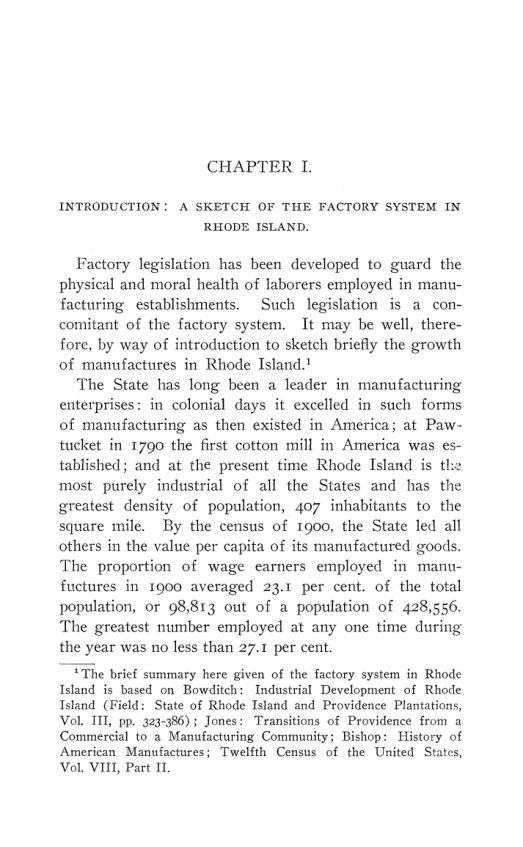

Towles, 1908: as leis de fábrica de Rhode Island, de 1840 a 1907
Leitura: 11 min
Em 1908, John K. Towles reconstituiu as leis de fábrica de Rhode Island: trabalho infantil, jornada, inspeção, saídas de incêndio e a distância entre o que a lei dizia e o que se fiscalizava.


No verão de 1907, John K. Towles trabalhou como operário em várias fábricas de Providence e do vale do Blackstone e acompanhou os inspetores estaduais em visitas a cerca de uma dúzia de fábricas em Providence, Pawtucket e Woonsocket. Certa vez, contou 46 crianças pequenas entrando por uma das portas de uma grande fábrica de lã de Providence. Pelo tamanho, escreve, muitas não pareciam ter os 14 anos que a lei exigia desde o fim de 1906.
Factory Legislation of Rhode Island saiu em 1908 como o nº 3 do vol. 9 da terceira série do Quarterly da American Economic Association. Em seis capítulos, Towles trata do sistema fabril do estado, do trabalho infantil, da jornada, da lei de inspeção de fábricas, das saídas de incêndio e dos elevadores e do Bureau of Industrial Statistics. As fontes são os diários da legislatura, os jornais de Providence, os relatórios oficiais e o que o próprio autor viu nas fábricas.
Por que Rhode Island?
Towles apresenta o estado como o mais industrial do país. Em Pawtucket, em dezembro de 1790, Samuel Slater, em sociedade com Moses Brown, abriu a primeira fiação de algodão da América. Pelo censo de 1900, Rhode Island tinha a maior densidade populacional do país e liderava em valor per capita de manufaturas; os assalariados da indústria eram 23,1% da população total.
Desde o início, a mão de obra das fiações incluía crianças. Slater começou com quatro fiandeiros e cardadores e logo acrescentou cinco crianças de sete a doze anos. Em 1801, Josiah Quincy viu na fábrica de Slater mais de cem crianças de quatro a dez anos, pagas de 12 a 25 centavos por dia.
Por que as primeiras leis não pegaram?
A primeira lei de trabalho infantil foi apresentada por Thomas R. Holden, de Warwick, em 3 de novembro de 1838, e aprovada em 25 de janeiro de 1840: a criança com menos de 12 anos só podia trabalhar em fábrica se tivesse frequentado a escola três meses nos doze meses anteriores, sob multa de US$ 50 ao patrão. Ninguém ficou encarregado de aplicá-la, e ela caiu em 1845, omitida da nova lei escolar.
Em 1851, a legislatura mandou investigar. O comissário nomeado, coronel Welcome Sayles, contou 1.857 menores de 15 anos nas fábricas e propôs, em 1853, idade mínima de 12 anos, jornada de 11 horas dos 12 aos 15 e um comissário estadual para visitar as fábricas. A lei de 1853 adotou a idade mínima e o limite de 11 horas, entre 5h e 19h30, mas a Câmara retirou as cláusulas de educação, em votação partidária. A multa de US$ 20 só atingia quem violasse a lei conscientemente.
Em 1854, exigiu-se que o menor de 15 anos tivesse frequentado a escola três meses no ano anterior; em 1856, uma lei autorizou os municípios a tratar das crianças faltosas. Nenhuma das três leis dizia quem as aplicaria. Fabricantes de Connecticut, segundo o estudo de Alba M. Edwards também neste arquivo, queixavam-se em 1870-73 dessa liberdade do estado vizinho. Em 1875, o censo estadual contou 1.258 crianças com menos de 12 anos nas fábricas, das quais 599 tinham 11 anos.
Por que a lei de 1883 foi um passo atrás?
A lei de 1883 foi a primeira a prever quem a aplicasse: agentes municipais de frequência escolar, obrigados a visitar cada fábrica uma vez por período letivo e a conferir os certificados de idade e escolaridade. Mas a mesma lei baixou a idade mínima de 12 para 10 anos e revogou os limites de jornada de 1853, sem pôr nada no lugar. E a nomeação dos agentes ficou, na prática, opcional.
A lei de 1887 tentou dar dentes à anterior: o município que não a cumprisse perderia metade da verba escolar estadual. Não funcionou. Em 1888, o Conselho Estadual de Educação relatou agentes nomeados pelo partido no poder, mal pagos e, às vezes, supervisores nas fábricas, empregando as crianças que deviam estar na escola. De 1885 a 1888, a população escolar de 5 a 15 anos cresceu 6,2%; a de 10 a 15, que deveria ter crescido cerca de metade disso, cresceu 1,1%. A conclusão:
“Ou a mortalidade dessas crianças era excepcionalmente alta, ou a veracidade de seus pais, excepcionalmente baixa.” (“either the mortality of such children was unusually large, or the veracity of their parents unusually small.”)
O que mudou com a inspeção de fábricas?
A lei de 1894, modelada na de Massachusetts, restabeleceu a idade mínima de 12 anos em estabelecimentos industriais e comerciais com cinco ou mais empregados, exigiu registro de todo menor de 16 e criou dois inspetores nomeados pelo governador, um deles mulher, com salário de US$ 1.500 cada. A multa chegava a US$ 500.
Seguiram-se a lei de 1902, que elevou para 13 anos a idade mínima durante o período escolar, e a de 9 de março de 1905: 13 anos até 31 de dezembro de 1906 e 14 depois, proibição do trabalho de menores de 16 antes das 6h e depois das 20h e certificado de idade emitido pelo comitê escolar. Ficavam de fora o serviço doméstico e a agricultura. Em 1907, a lei passou a valer também para quem empregasse menos de cinco pessoas.
A lei era aplicada? Gilbert E. Whittemore, agente de frequência escolar de Providence, disse ao autor que, no ano encerrado em 30 de junho de 1907, comunicou 93 casos de emprego ilegal ao departamento de inspeção, sem que os inspetores processassem um único patrão. Em relatório de setembro de 1907, defendeu que os processados fossem os patrões, e não pais ou crianças:
“Não acredito que as leis do trabalho infantil possam ser aplicadas pela persuasão.” (“I do not believe that the child labor laws can be enforced by persuasion.”)
A lei encurtou a jornada?
A lei de 1853 declarou dez horas a jornada legal, salvo acordo em contrário entre as partes, ressalva que, para Towles, a anulava. A redução veio por decisão dos patrões: no início dos anos 1870, a regra geral já era de 11 horas por dia, e em 1883 a semana estava em cerca de 66 horas. Naquele ano, a lei escolar revogou os limites de 1853 e deixou o estado sem nenhum teto de jornada.
A lei das dez horas, de 1885, veio da campanha dos Knights of Labor. Petições de quase todas as cidades fabris somaram mais de 16 mil nomes; 238 pessoas e 91 empresas pediram a rejeição. A lei limitou a dez horas por dia e 60 por semana o trabalho de mulheres e menores de 16 anos em estabelecimentos industriais e mecânicos, com multa de US$ 20, e aceitou como prova conclusiva o certificado de idade feito pelo próprio menor ou pelos pais. Por catorze anos ninguém foi encarregado de aplicá-la; a tarefa passou aos inspetores de fábrica em 1899. Em 1902, a semana caiu de 60 para 58 horas.
Mesmo assim, a jornada caiu mais pelo mercado que pela fiscalização. Das 1.439 operárias que responderam ao comissário de estatísticas industriais em 1889, 1.298 trabalhavam dez horas e 23 passavam disso. Towles atribui o cumprimento sobretudo à constatação, pelos gerentes, de que a jornada de dez horas não reduzia a produção. A exceção eram os picos de encomendas, com horas extras pagas a 1⅓ ou 1½ vez o salário.
O que o inspetor podia exigir?
Fora a idade mínima e os elevadores, a lei de 1894 não fixava padrões: iluminação, aquecimento, ventilação, banheiros e proteção de máquinas deviam ser os que o inspetor julgasse necessários, com prazo de noventa dias para as correções. Towles vê vantagem na flexibilidade e risco de tudo depender do caráter do inspetor; defende padrões mínimos na própria lei. Os acidentes não eram comunicados: os inspetores dependiam dos jornais.
“A lei, estando no código, deveria ser aplicada ou revogada.” (“The law, being upon the statute book, should either be enforced or repealed.”)
Em 1907, os inspetores visitaram 1.899 estabelecimentos; Towles preferiria 600 inspeções cuidadosas.
E as saídas de incêndio e as estatísticas?
A lei de 1890, proposta por Lorin M. Cook, exigiu de toda fábrica com empregados acima do segundo andar escadas de incêndio metálicas externas ou escadas incombustíveis nas duas extremidades do prédio, com multa de US$ 100 a US$ 500. O certificado de conformidade isentava o dono de responsabilidade por três anos; em 1895, a isenção passou a valer sem prazo. Towles considera satisfatória a aplicação dessa lei e boa a da lei de elevadores.
O Bureau of Industrial Statistics, criado em 1887 com um comissário de US$ 2.000 por ano, podia multar em US$ 20 quem negasse informações, mas não podia entrar nas fábricas sem consentimento do dono. Para Towles, é duvidoso que tenha valido o que custou: os fabricantes copiavam de um ano para outro as respostas enviadas, e os sindicatos orientavam seus membros a não responder.
Na minha leitura
Na minha leitura, o livro é um estudo sobre a distância entre o texto legal e o desenho de quem o aplica. Cada lei falha num elo previsível: a de 1840 não tem fiscal; a de 1883 deixa o fiscal ao município que perde com a fiscalização; a de 1885 aceita como prova de idade a declaração do interessado; a de 1894 dá ao inspetor discricionariedade sem padrão. A contribuição de método está em perguntar, para cada norma, quem fiscaliza, quem paga o fiscal, quem produz a prova e quanto custa descumprir.
O segundo ponto, na minha leitura, é a causalidade. A jornada caiu antes da lei e, segundo o próprio autor, sobretudo porque os patrões viram que dez horas não reduziam a produção; o trabalho infantil caiu junto com a inspeção, mas também com a mudança de opinião registrada a partir de 1890. Separar as duas forças é o problema clássico de toda avaliação de regulação: a lei tende a funcionar quando acompanha um custo que o mercado já está disposto a pagar e quando alguém tem incentivo para aplicá-la.
Glossário
- Lei de frequência escolar (truant law)
- lei que obriga a criança a frequentar a escola e prevê punição para a ausência.
- Agente de frequência escolar (truant officer)
- funcionário municipal encarregado de levar à escola as crianças faltosas e de conferir certificados nas fábricas.
- Certificado de idade
- documento que o patrão devia manter para provar que o menor empregado tinha a idade mínima legal.
- Knights of Labor
- organização nacional de trabalhadores, forte nos Estados Unidos na década de 1880.
- General Assembly
- a legislatura estadual de Rhode Island, formada por Senado e Câmara.
- Inspetor de fábricas (factory inspector)
- funcionário estadual que fiscaliza as condições de trabalho e aplica as leis fabris.
- Bureau of Industrial Statistics
- repartição estadual criada em 1887 para coletar e publicar dados sobre trabalho e indústria.
Fontes
- Factory Legislation of Rhode Island (pp. 1–119). JSTOR · Internet Archive (PDF)
- Sumário da edição no JSTOR: American Economic Association Quarterly, 3ª série, vol. 9, nº 3.
Documento em domínio público (EUA, publicado antes de 1931), via JSTOR Early Journal Content e Internet Archive. Resumo e comentário do autor deste site, sem afiliação com a American Economic Association. Encontrou um erro? Escreva: a correção é publicada no próprio texto, com data.
← Nº 91 · O segundo Bulletin: greenbacks, orçamentos operários e coleções Nº 93 · O terceiro Bulletin: petróleo, população e a bibliografia herdada →